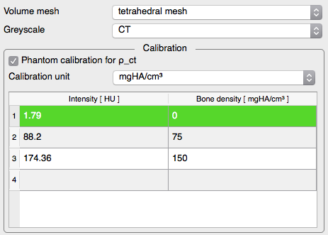

Features
MITK-GEM implements all its features as plugins for the Medical Imaging Interaction Toolkit (MITK) Workbench. It expands the MITK Workbench by offering a finite element model generation workflow with the following steps:
MITK-GEM is a free open-source software pipeline to generate finite element models from image data. MITK-GEM is built on top of the Medical Imaging Interaction Toolkit (MITK) Workbench.
MITK-GEM implements all its features as plugins for the Medical Imaging Interaction Toolkit (MITK) Workbench. It expands the MITK Workbench by offering a finite element model generation workflow with the following steps:

 contains all loaded data (images, surfaces, meshes) as well as the results produced by the plugins. You can save your results from here by right clicking on them and selecting save.
contains all loaded data (images, surfaces, meshes) as well as the results produced by the plugins. You can save your results from here by right clicking on them and selecting save.
 and create a new mask for the background.
and create a new mask for the background. .. You can right click it to save it on your disk or proceed with the surface mesh generation.
.. You can right click it to save it on your disk or proceed with the surface mesh generation.
The Surface Mesher allows the conversion of binary masks to surface meshes using a marching cubes algorithm. A binary mask is an image with background values of 0 and foreground values of 255.
..
Note: To generate a closed surface, make sure the mask does not extend to the border of the image. You can use the padding pluginto add empty slices.
Using the Volume Mesher plugin, you can create volumetric (tetrahedral) meshes from surfaces. The meshing is done by tetgen. The results are represented as unstructured grids (.vtu).
Visualization of unstructured grids is currently disabled. To inspect the results, you can enable visualization with the UG Visualization Plugin or use a tool such as paraview.
or use a tool such as paraview.
.
The material mapping plugin is used to assign material properties to a volume mesh from image voxel values. The plugin determines for each node in a volumetric mesh the corresponding gray scale value in the image. Through a series of conversion steps, gray scale values in Hounsfield units are converted to bone density and finally to elastic modulus using a power law. The plugin supports this workflow and produces a volumetric mesh represented as an unstructured grid (.vtu) with elastic modulus assigned to each node and element. The unstructured grid can subsequently be converted to FE solver compatible formats using conversion scripts (examples provided). For more information refer to our paper.
 and the average value can be obtained by selecting image and calibrator mask and enabling the Statistics plugin.

No, MITK-GEM is for research only.
Yes, MITK-GEM is released under the GPLv3 license and you may use it under these terms. If you do use it, please cite the paper.
MITK-GEM as a tool is released under the GPLv3 license. However, the plugins are individually licensed and may be used under these conditions separately:
For more details, see the LICENSE.txt in the respective plugins source code folder.On linux, the enviroment variable QT_PLUGIN_PATH has to be set to point to the Qt5 plugins directory in order to start MITK-GEM. Example:
bash:~/$ export QT_PLUGIN_PATH=/usr/lib/x86_64-linux-gnu/qt5/plugins
The material mapping plugin allows you to export the current parametrization to a .matmap file. The file uses the XML markup language and can be opened with any text editor. An example of a .matmap file is given below.
<?xml version="1.0" encoding="utf-8" ?>
<MaterialMapping Version="2016.2">
<Calibration unit="mgHA/cm³">
<DataPoint HU="1.79" rho="0" />
<DataPoint HU="88.200000000000003" rho="75" />
<DataPoint HU="174.360000000000014" rho="150" />
</Calibration>
<BoneDensityParameters>
<RhoCT AutomaticFit="1" slope="0" offset="0" />
<RhoAsh enabled="1" offset="0" divisor="1" />
<RhoApp enabled="1" divisor="0" />
</BoneDensityParameters>
<PowerLaws>
<PowerLawParameters factor="1" exponent="1" offset="0" rangeMin="-3.40282346638529e+38" rangeMax="0" />
<PowerLawParameters factor="6850" exponent="1.49" offset="0" rangeMin="0" rangeMax="-3.40282346638529e+38" />
</PowerLaws>
<Options doPeel="1" numberOfExtends="3" minValue="0" />
</MaterialMapping>
Yes, you can provide a partially defined .matmap file including only the calibration element:
<?xml version="1.0" encoding="utf-8" ?>
<MaterialMapping Version="2016.2">
<Calibration unit="mgHA/cm³">
<DataPoint HU="1.79" rho="0" />
<DataPoint HU="88.200000000000003" rho="75" />
<DataPoint HU="174.360000000000014" rho="150" />
</Calibration>
</MaterialMapping>
The graphcut algorithm requires large amounts of memory to build the necessary graph. This field tells you exactly how much memory the graph and the image data will allocate. It is highly recommended that you have at least this much free memory before starting the computation. If you do not have enough memory, see FAQ Section "I have less memory than 'Required memory'" for workarounds.
Not having enough memory will increase the computation time drastically and can even result in a crash of the application. Options at this point are:
 .
. .
.The 'estimated time' is based on test results on one of our machines. Depending on your hardware, your results may vary. Especially if your machine is not able to store the complete graph in memory, the computation time will increase dramatically.
This is a problem when the plugin tries to allocate more memory than your machine can handle. Please refer to the FAQ section "I have less memory than 'Required memory'" for information on how to decrease the memory usage.
The standalone application uses a command line interface (CLI) instead of a graphical user interface. Usage requires basic knowledge of your operating systems terminal enviroment.
$ ./GraphCutSegmentation data/input.mhd data/foreground.mhd data/background.mhd data/output.mhd 50 0 1
$ ./GraphCutSegmentation --help Required: image foreground background output sigma boundaryDirection image: 3D image in Hounsfield Units -1024 to 3071 foreground: 3D image non-zero pixels indicating foreground and 0 elsewhere background: 3D image non-zero pixels indicating background and 0 elsewhere output: 3D image resulting segmentation sigma: estimated noise in boundary term, try 50.0 boundaryDirection: 0->bidirectional; 1->bright to dark; 2->dark to bright
There's a seperate FAQ for building over here.
This error occurs on systems with a installed QT version older than 4.8. Please update your QT version.
You have to open the plugins by clicking on their icons: and .

Because the surface mesher plugin uses the marching cubes algorithm, it produces open meshes when the mask extends to the border of the image. One way to work around this is to add an empty slice using the padding plugin.
For further information and contact details please refer to our simtk project.
 .
.{kind=link}
{kind=link}
{kind=link}
{kind=link}